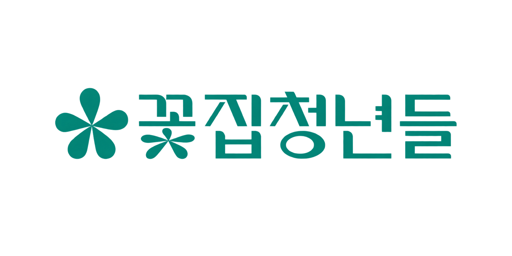

반드시 지참
01실물 신분증 필수
교육 당일 본인 확인을 위해
실물 신분증을 꼭 챙겨 주세요.
사진·캡처본·명함은 인정되지 않습니다.

2026 중소기업 인재키움 프리미엄 훈련과정
AX RECIPE 업무 적용 실무
현장의 문제를 AI로 바꾸는 생성형 AI기반 업무 적용 실무
업무 문제를 찾고, Claude Cowork로 설계·구축·검증합니다.
교육에 필요한 정보를 미리 확인하고 준비해 주세요.
BEFORE YOU START
원활한 실습 참여를 위해
교육 전 꼭 확인해 주세요.
교육 당일 본인 확인을 위해
실물 신분증을 꼭 챙겨 주세요.
실습에 사용할 개인 노트북과
충전기를 함께 챙겨 주세요.
수강생 본인의 유료 계정을
교육 전에 준비해 주세요.
WHEN & WHERE
교육장 주소와 호수를 미리 확인해 주세요.
서울 금천구 가산디지털1로 168
우림라이온스밸리 C동 210-1호
YOUR LEARNING JOURNEY
반복 업무를 진단하고 개인화 AI 비서를 만듭니다.
실제 업무에 적용하는 방법까지 함께 정리합니다.
※ 세부 실습 내용은 수업 진행 상황 및 교육 일정에 따라 변경될 수 있습니다.
TAKE IT TO YOUR WORK
직접 만든 AI 비서와 적용안을 바탕으로
교육에서 익힌 방법을 현업으로 이어갑니다.
내 업무 흐름과 검수 기준을 담은 AI 비서 설정
업무 설계서·테스트 결과·적용 프로세스
반복해서 사용하고 동료와 공유할 수 있는 활용 안내
RESOURCES & HELP
교안 확인부터 운영 문의까지
필요한 곳으로 바로 이동하세요.
도움이 필요하신가요?‘10월 22일 AX 레시피 교육’이라고 말씀해 주세요.
070-8833-7771 ↗